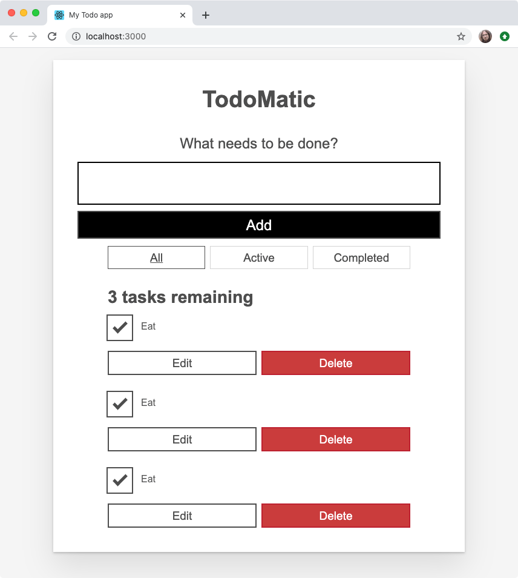

Componentizing our React app
At this point, our app is a monolith. Before we can make it do things, we need to break it apart into manageable, descriptive components. React doesn't have any hard rules for what is and isn't a component – that's up to you! In this article we will show you a sensible way to break our app up into components.
| Prerequisites: |
Familiarity with the core HTML, CSS, and JavaScript languages, knowledge of the terminal/command line. |
|---|---|
| Objective: | To show a sensible way of breaking our todo list app into components. |
Defining our first component
Defining a component can seem tricky until you have some practice, but the gist is:
- If it represents an obvious "chunk" of your app, it's probably a component
- If it gets reused often, it's probably a component.
That second bullet is especially valuable: making a component out of common UI elements allows you to change your code in one place and see those changes everywhere that component is used. You don't have to break everything out into components right away, either. Let's take the second bullet point as inspiration and make a component out of the most reused, most important piece of the UI: a todo list item.
Make a <Todo />
Before we can make a component, we should create a new file for it. In fact, we should make a directory just for our components. The following commands make a components directory and then, within that, a file called Todo.js. Make sure you're in the root of your app before you run these!
mkdir src/components
touch src/components/Todo.js
Our new Todo.js file is currently empty! Open it up and give it its first line:
import React from "react";
Since we're going to make a component called Todo, you can start adding the code for that to Todo.js too, as follows. In this code, we define the function and export it on the same line:
export default function Todo() {
return (
// …
);
}
This is OK so far, but our component has to return something! Go back to src/App.js, copy the first <li> from inside the unordered list, and paste it into Todo.js so that it reads like this:
export default function Todo() {
return (
<li className="todo stack-small">
<div className="c-cb">
<input id="todo-0" type="checkbox" defaultChecked={true} />
<label className="todo-label" htmlFor="todo-0">
Eat
</label>
</div>
<div className="btn-group">
<button type="button" className="btn">
Edit <span className="visually-hidden">Eat</span>
</button>
<button type="button" className="btn btn__danger">
Delete <span className="visually-hidden">Eat</span>
</button>
</div>
</li>
);
}
Note: Components must always return something. If at any point in the future you try to render a component that does not return anything, React will display an error in your browser.
Our Todo component is complete, at least for now; now we can use it. In App.js, add the following line near the top of the file to import Todo:
import Todo from "./components/Todo";
With this component imported, you can replace all of the <li> elements in App.js with <Todo /> component calls. Your <ul> should read like this:
<ul
role="list"
className="todo-list stack-large stack-exception"
aria-labelledby="list-heading"
>
<Todo />
<Todo />
<Todo />
</ul>
When you look back at your browser, you'll notice something unfortunate: your list now repeats the first task three times!

We don't only want to eat; we have other things to — well — to do. Next we'll look at how we can make different component calls render unique content.
Make a unique <Todo />
Components are powerful because they let us re-use pieces of our UI, and refer to one place for the source of that UI. The problem is, we don't typically want to reuse all of each component; we want to reuse most parts, and change small pieces. This is where props come in.
What's in a name?
In order to track the names of tasks we want to complete, we should ensure that each <Todo /> component renders a unique name.
In App.js, give each <Todo /> a name prop. Let's use the names of our tasks that we had before:
<Todo name="Eat" />
<Todo name="Sleep" />
<Todo name="Repeat" />
When your browser refreshes, you will see… the exact same thing as before. We gave our <Todo /> some props, but we aren't using them yet. Let's go back to Todo.js and remedy that.
First modify your Todo() function definition so that it takes props as a parameter. You can console.log() your props as we did before, if you'd like to check that they are being received by the component correctly.
Once you're confident that your component is getting its props, you can replace every occurrence of Eat with your name prop. Remember: when you're in the middle of a JSX expression, you use curly braces to inject the value of a variable.
Putting all that together, your Todo() function should read like this:
export default function Todo(props) {
return (
<li className="todo stack-small">
<div className="c-cb">
<input id="todo-0" type="checkbox" defaultChecked={true} />
<label className="todo-label" htmlFor="todo-0">
{props.name}
</label>
</div>
<div className="btn-group">
<button type="button" className="btn">
Edit <span className="visually-hidden">{props.name}</span>
</button>
<button type="button" className="btn btn__danger">
Delete <span className="visually-hidden">{props.name}</span>
</button>
</div>
</li>
);
}
Now your browser should show three unique tasks. Another problem remains though: they're all still checked by default.
Is it completed?
In our original static list, only Eat was checked. Once again, we want to reuse most of the UI that makes up a <Todo /> component, but change one thing. That's a good job for another prop! Give each <Todo /> call in App.js a new prop of completed. The first (Eat) should have a value of true; the rest should be false:
<Todo name="Eat" completed={true} />
<Todo name="Sleep" completed={false} />
<Todo name="Repeat" completed={false} />
As before, we must go back to Todo.js to actually use these props. Change the defaultChecked attribute on the <input /> so that its value is equal to the completed prop. Once you're done, the Todo component's <input /> element will read like this:
<input id="todo-0" type="checkbox" defaultChecked={props.completed} />
And your browser should update to show only Eat being checked:

If you change each <Todo /> component's completed prop, your browser will check or uncheck the equivalent rendered checkboxes accordingly.
Gimme some id, please
Right now, our <Todo /> component gives every task an id attribute of todo-0. This is bad HTML because id attributes must be unique (they are used as unique identifiers for document fragments, by CSS, JavaScript, etc.). This means we should give our component an id prop that takes a unique value for each Todo.
To follow the same pattern we had initially, let's give each instance of the <Todo /> component an ID in the format of todo-i, where i gets larger by one every time:
<Todo name="Eat" completed={true} id="todo-0" />
<Todo name="Sleep" completed={false} id="todo-1" />
<Todo name="Repeat" completed={false} id="todo-2" />
Now go back to Todo.js and make use of the id prop. It needs to replace the value of the id attribute of the <input /> element, as well as the value of its label's htmlFor attribute:
<div className="c-cb">
<input id={props.id} type="checkbox" defaultChecked={props.completed} />
<label className="todo-label" htmlFor={props.id}>
{props.name}
</label>
</div>
So far, so good?
We're making good use of React so far, but we could do better! Our code is repetitive. The three lines that render our <Todo /> component are almost identical, with only one difference: the value of each prop.
We can clean up our code with one of JavaScript's core abilities: iteration. To use iteration, we should first re-think our tasks.
Tasks as data
Each of our tasks currently contains three pieces of information: its name, whether it has been checked, and its unique ID. This data translates nicely to an object. Since we have more than one task, an array of objects would work well in representing this data.
In src/index.js, make a new const beneath the final import, but above ReactDOM.render():
const DATA = [
{ id: "todo-0", name: "Eat", completed: true },
{ id: "todo-1", name: "Sleep", completed: false },
{ id: "todo-2", name: "Repeat", completed: false }
];
Next, we'll pass DATA to <App /> as a prop, called tasks. The final line of src/index.js should read like this:
const root = ReactDOM.createRoot(document.getElementById("root"));
root.render(
<React.StrictMode>
<App tasks={DATA} />
</React.StrictMode>
);
This array is now available to the App component as props.tasks. You can console.log() it to check, if you'd like.
Note: ALL_CAPS constant names have no special meaning in JavaScript; they're a convention that tells other developers "this data will never change after being defined here".
Rendering with iteration
To render our array of objects, we have to turn each one into a <Todo /> component. JavaScript gives us an array method for transforming data into something else: Array.prototype.map().
Above the return statement of App(), make a new const called taskList and use map() to transform it. Let's start by turning our tasks array into something simple: the name of each task:
const taskList = props.tasks?.map((task) => task.name);
Let's try replacing all the children of the <ul> with taskList:
<ul
role="list"
className="todo-list stack-large stack-exception"
aria-labelledby="list-heading"
>
{taskList}
</ul>
This gets us some of the way towards showing all the components again, but we've got more work to do: the browser currently renders each task's name as unstructured text. We're missing our HTML structure — the <li> and its checkboxes and buttons!

To fix this, we need to return a <Todo /> component from our map() function — remember that JSX allows us to mix up JavaScript and markup structures! Let's try the following instead of what we have already:
const taskList = props.tasks.map((task) => <Todo />);
Look again at your app; now our tasks look more like they used to, but they're missing the names of the tasks themselves. Remember that each task we map over has the id, name, and completed properties we want to pass into our <Todo /> component. If we put that knowledge together, we get code like this:
const taskList = props.tasks.map((task) => (
<Todo id={task.id} name={task.name} completed={task.completed} />
));
Now the app looks like it did before, and our code is less repetitive.
Unique keys
Now that React is rendering our tasks out of an array, it has to keep track of which one is which in order to render them properly. React tries to do its own guesswork to keep track of things, but we can help it out by passing a key prop to our <Todo /> components. key is a special prop that's managed by React – you cannot use the word key for any other purpose.
Because keys should be unique, we're going to re-use the id of each task object as its key. Update your taskList constant like so:
const taskList = props.tasks.map((task) => (
<Todo
id={task.id}
name={task.name}
completed={task.completed}
key={task.id}
/>
)
);
You should always pass a unique key to anything you render with iteration. Nothing obvious will change in your browser, but if you do not use unique keys, React will log warnings to your console and your app may behave strangely!
Componentizing the rest of the app
Now that we've got our most important component sorted out, we can turn the rest of our app into components. Remembering that components are either obvious pieces of UI, or reused pieces of UI, or both, we can make two more components:
<Form/><FilterButton/>
Since we know we need both, we can batch some of the file creation work together with a terminal command. Run this command in your terminal, taking care that you're in the root directory of your app:
touch src/components/Form.js src/components/FilterButton.js
The <Form />
Open components/Form.js and do the following:
- Import
Reactat the top of the file, like we did inTodo.js. - Make yourself a new
Form()component with the same basic structure asTodo(), and export that component. - Copy the
<form>tags and everything between them from insideApp.js, and paste them insideForm()'sreturnstatement. - Export
Format the end of the file.
Your Form.js file should read like this:
import React from "react";
function Form(props) {
return (
<form>
<h2 className="label-wrapper">
<label htmlFor="new-todo-input" className="label__lg">
What needs to be done?
</label>
</h2>
<input
type="text"
id="new-todo-input"
className="input input__lg"
name="text"
autoComplete="off"
/>
<button type="submit" className="btn btn__primary btn__lg">
Add
</button>
</form>
);
}
export default Form;
The <FilterButton />
Do the same things you did to create Form.js inside FilterButton.js, but call the component FilterButton() and copy the HTML for the first button inside the <div> element with the class of filters from App.js into the return statement.
The file should read like this:
import React from "react";
function FilterButton(props) {
return (
<button type="button" className="btn toggle-btn" aria-pressed="true">
<span className="visually-hidden">Show </span>
<span>all </span>
<span className="visually-hidden"> tasks</span>
</button>
);
}
export default FilterButton;
Note: You might notice that we are making the same mistake here as we first made for the <Todo /> component, in that each button will be the same. That's fine! We're going to fix up this component later on, in Back to the filter buttons.
Importing all our components
Let's make use of our new components.
Add some more import statements to the top of App.js, to import them.
Then, update the return statement of App() so that it renders our components. When you're done, App.js will read like this:
import React from "react";
import Form from "./components/Form";
import FilterButton from "./components/FilterButton";
import Todo from "./components/Todo";
function App(props) {
const taskList = props.tasks.map((task) => (
<Todo
id={task.id}
name={task.name}
completed={task.completed}
key={task.id}
/>
)
);
return (
<div className="todoapp stack-large">
<h1>TodoMatic</h1>
<Form />
<div className="filters btn-group stack-exception">
<FilterButton />
<FilterButton />
<FilterButton />
</div>
<h2 id="list-heading">3 tasks remaining</h2>
<ul
role="list"
className="todo-list stack-large stack-exception"
aria-labelledby="list-heading"
>
{taskList}
</ul>
</div>
);
}
export default App;
With this in place, we're almost ready to tackle some interactivity in our React app!
Summary
In this module
- Introduction to client-side frameworks
- Framework main features
- React
- Ember
- Vue
- Getting started with Vue
- Creating our first Vue component
- Rendering a list of Vue components
- Adding a new todo form: Vue events, methods, and models
- Styling Vue components with CSS
- Using Vue computed properties
- Vue conditional rendering: editing existing todos
- Focus management with Vue refs
- Vue resources
- Svelte
- Angular